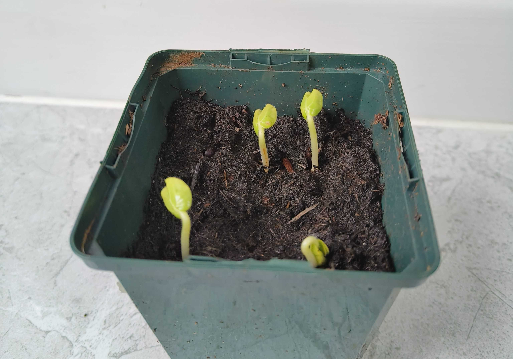

My Blogs
What to plant in May

In May, all risk of frost has passed in most regions of the UK. Many vegetable, herb and flower seeds can be directly sown outdoors, while earlier sowings can now be planted out after a period of acclimatisation (hardening off) to outside conditions.
Plenty of seeds can be sown indoors, too, including more tender crops like cucumber and melon. Sowing indoors will protect young plants from slugs and snails by planting them outside when they're large enough to handle you'll give them a head start on predators.
Pot-grown fruit trees and shrubs, including fig trees, citrus trees and gooseberries can be planted all year round, while May is your last opportunity to plant strawberry runners for a chance of a crop this year.
1. Vegetables:
Brussels sprouts, broccoli, cauliflower, kale, lettuce, radishes, spinach, peas, and broad beans.
These are fast-growing crops that can be harvested in late summer or early autumn.

2. Herbs:
Chives, parsley, sage, and thyme. These are easy-to-grow herbs that can be used in a variety of dishes.
3. Fruits:
Strawberries, raspberries, and blackberries. These can be grown in containers or in the ground.
4. Flowers:
Marigolds, petunias, geraniums, and sunflowers. These are popular annual flowers that are easy to grow and provide a colourful display.